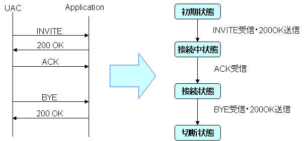
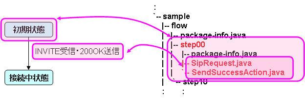
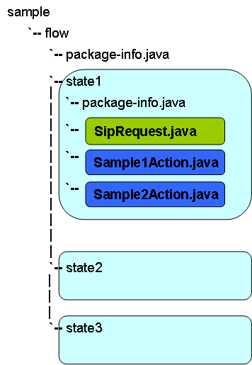

sf-flow-api
sf-flowについて
sf-flowは、sf-coreを拡張したSIPアプリケーション用のフレームワークです。
sf-flowの開発方法
sf-flowを使う場合、以下の順番で開発を行います。
- 状態遷移図の作成
- アプリケーションの実装
最初に状態遷移を設計するのには理由が２つあります。 １つは、SIPアプリケーションの場合、状態遷移を設計することが重要だからです。 もう１つは、sf-flowが状態遷移図を元にして、アプリケーションを開発できるように設計されているからです。 sf-flowで開発を行う場合、アプリケーションの状態をいくつも作成し、各状態におけるイベントとアクションと状態の遷移を実装します。
例えば、Fig.1のアプリケーションを作成する場合を考えます。
Fig.1 サンプルアプリケーションのシーケンス図と状態遷移図
この状態遷移図を元に、sf-flowでアプリケーションを実装するとFig.2になります。
Fig.2 sf-flowでの実装例
sf-flowでは、状態をパッケージとして作成します。図の場合だと初期状態をstep00という名前で作成しています。
各状態でイベントが発生した場合に自動的に呼ばれるクラスがあります。 例えば、SipRequestというクラスはSIPのリクエストを受信した際に呼び出されます。 こういったイベントが発生した際に呼び出されるクラスは、Evaluate Classと呼ばれます。 Evaluate Classで、どのイベントが発生した際にどのアクションを実行するか実装します。 例えば、図の場合だと、SipRequest.javaの中では、受信したSIPリクエストがINVITEだった場合、SendSuccessActionを呼び出すように実装します。
Evaluate Classから呼び出されるクラスをAction Classと呼びます。 Action Classではアクションを実装します。また、このクラスが実行された後に、次にどの状態に遷移するか実装します。 例えば、図の場合だと、SendSuccessActionがAction Classです。この中でINVITEに対する200 OK 応答を送信するように実装します。また、接続中状態に遷移するように実装します。
以降、同様に"接続中状態"、"接続状態"も作成していきます。
詳しい実装方法については、次以降で説明します。
sf-flowの実装方法の概要
sf-flowの実装方法の概要を説明します。
sf-flowでの状態の概念図をFig.3に示します。

Fig.3 sf-flowでの状態の概念図
- State
水色がStateを表しています。各StateにEvaluate ClassとAction Classを作成します。
- Evaluate Class
緑色がEvaluate Classを表しています。Evaluate Classでは、どのイベントに対してどのアクションを実行するかを実装します。
Evaluate Classはイベントが発生した際に呼び出されます。 sf-coreの場合は"INVITEの受信"や"暫定応答の受信"など、細かい単位で呼び出されますが、sf-flowの場合は"リクエストの受信"や"レスポンスの受信"といったように、sf-coreと比べて大きな単位で呼び出されます。 従って、細かい条件分岐が必要な場合は、適時実装する必要があります。
sf-flowで呼び出される単位は以下になります。
- SIPリクエストの受信
- SIPレスポンスの受信
- ServletTimerのタイムアウト
- ACK、PRACKが受信できなかった場合
- SipApplicationSessionがExpireした場合
- Webからの呼出し
- Action Class
青色がAction Classを表しています。Action Classでは、実行するアクションの内容と、アクションの実行後にどのStateに遷移するかを実装します。
具体的な実装方法については次で説明します。
sf-flowの実装方法
sf-flowでの実装方法をFig.4に示します。
Fig.4 sf-flowの実装方法
FlowRootの作成
sf-flowでは、複数の状態を１つのパッケージの中にまとめて作成します。このまとめたパッケージのことをFlowRootと呼びます。
FlowRootは、package-info.javaに＠FlowRootアノテーションを付けることで作成できます。
図の場合、"flow"パッケージがFlowRootです。"flow"パッケージのpackage-info.javaは以下のように記述します。
@FlowRoot(startState="state1") package sample.flow; import org.mobicents.ssf.flow.configuration.FlowRoot;
Stateの作成
Stateは、FlowRoot以下にパッケージを作成し、package-info.javaで＠Stateアノテーションを付けることで作成できます。
package-info.javaの例を以下に示します。
@State(name="step00") package sample.flow.step00; import org.mobicent.ssf.flow.configuration.State;
Evaluate Classの作成
Evaluate Classは、各Stateのパッケージ内に作成します。イベントの種類毎に作成する必要があり、それぞれ作成するクラス名が決まっています。
Table.1 イベントの種類と呼び出されるクラス
| Event Type | Java Source File Name |
| SIPリクエストの受信 | SipRequest.java |
| SIPレスポンスの受信 | SipResponse.java |
| ServletTimerのタイムアウト | TimerTimeout.java |
| SipApplicationSessionがExpireした場合 | SipApplicationExpired.java |
| ACKやPRACKを受信しなかった場合 | SipErrorOccurred.java |
| Webからの呼出し | Dispatcher.java |
作成したEvaluate Classで、実際に評価を行うメソッドには＠Evaluateアノテーションを付けます。＠Evaluateアノテーションを付けることで、イベントが発生した際にこのメソッドが呼ばれます。
Evaluate Classでは、実行するAction Classを指定します。Action Classの指定は２箇所で実施する必要があります。
- ＠TransitionSetアノテーション
- メソッドの返り値
＠TransitionSetアノテーションで指定する値と、メソッドの返り値は一致している必要があります。またメソッドの返り値が複数ある場合は、＠TransitionSetアノテーションではカンマ区切りで全て記述します。
メソッドの返り値(＠TransitionSet)で指定した値の一文字目を大文字にし、語尾に"Action"を追加した名前のクラスがAction Classになります。
Evaluate Classの例を以下に示します。
package com.oki.sample.b2bua.flow.step00;
import javax.servlet.sip.SipServletRequest;
import org.mobicents.ssf.flow.annotation.Evaluate;
import org.mobicents.ssf.flow.configuration.TransitionSet;
@TransitionSet(values={"forwardInvite"})
public class SipRequest {
@Evaluate
public String evaluate(SipServletRequest req) {
if (req.isInitial() && "INVITE".equals(req.getMethod())) {
return "forwardInvite";
}
return null;
}
}
この例の場合、INVITEリクエストを受信した場合に"ForwardInviteAction"という名前のAction Classを実行します。
Action Classの作成
Action ClassもStateのパッケージ内に作成します。Action Classの名前はEvaluate Classで指定した値と同じもので作成します。
アクションの内容を記述したメソッドには、＠Transitionアノテーションを付けます。＠Transitionアノテーションを付けることで、Evaluate Classの後にメソッドが呼ばれます。
また、＠Transitionアノテーションで遷移先の状態を指定する必要があります。このAction Classの処理完了後、指定した状態に遷移します。
Action Classの例を以下に示します。
public class ForwardInvAction {
@Transition("step10")
public void execute(SipServletRequest req, SipFactory factory, PeerLocation peerLocation) throws Exception {
// create HeaderMap
SipURI uri = (SipURI)peerLocation.getAddress(req.getFrom(), req.getTo()).getURI();
Map<String, List<String>> map = HeaderMapUtil.createHeaderMap("To", uri.toString());
// create new INVITE Request
B2buaHelper helper = req.getB2buaHelper();
SipServletRequest invite = helper.createRequest(req, true, map);
invite.setRequestURI((URI)uri);
SipContentUtil.copy(req, invite);
// send INVITE Request
invite.send();
}
}
Maven2Archetypeの利用
上述した内容を全て手作業でやるのは手間がかかります。
しかし、sf-flowで開発を行うためのMaven2Archetypeを用意しています。このArchetypeを利用することで、開発する上で必要なJavaファイルや設定ファイルを自動生成してくれるので、開発の手間が大幅に省けます。
次のページでは、sf-flowのMaven2Archetypeについて説明します。